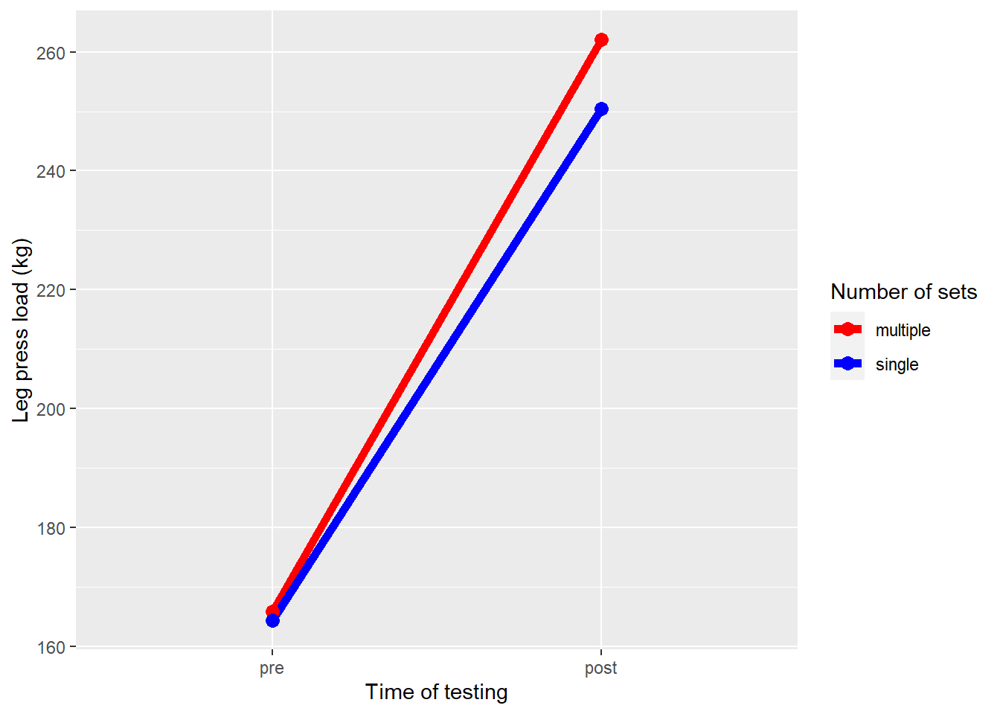
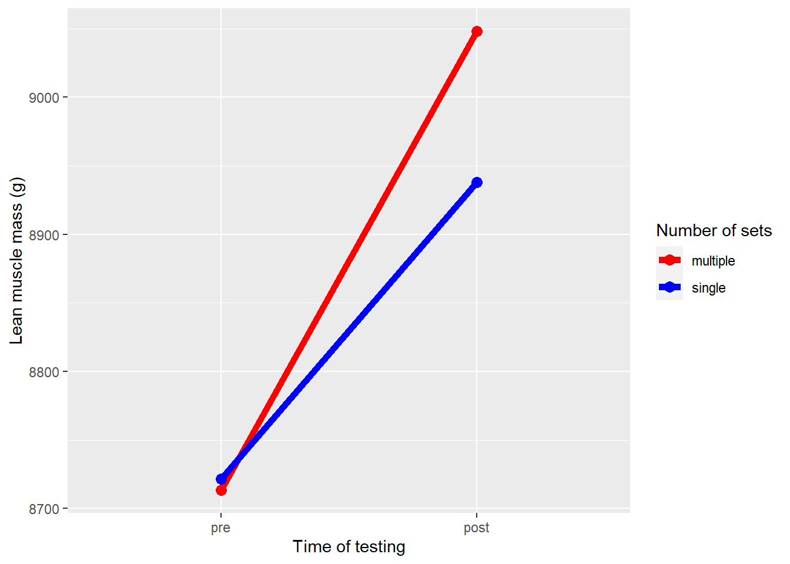

| Female | Male | |||
|---|---|---|---|---|
| Included | Excluded | Included | Excluded | |
| n | 18 | 4 | 16 | 3 |
| Age | 22 (1.3) | 22.9 (1.6) | 23.6 (4.1) | 24.3 (1.5) |
| Weight (kg) | 64.4 (10) | 64.6 (9.7) | 75.8 (11) | 88.2 (22) |
| Height (cm) | 168 (6.9) | 166 (7.6) | 183 (5.9) | 189 (4.6) |
The effect of different resistance training volumes on muscle strength and muscle mass in untrained individuals
Introduction
Resistance training volume, muscle strength and muscle mass are heavily researched topics in the field of resistance training. A search for muscle mass on PubMed gives 97,000 results, while searches for resistance training volume and muscle strength gives respectively 3,000 results and 89,000 results. It is well documented that resistance training is an effective way to increase both muscle strength and muscle mass (De Souza et al. 2018; Kennis et al. 2013; Cadore et al. 2018). Resistance training has been found to have a positive impact on various aspects of health, including enhancing physical performance, improving movement control, increasing walking speed, promoting functional independence, boosting cognitive abilities, and enhancing self-esteem (Westcott 2012). Resistance training can also aid in improving mental health. A meta-analysis found that anxiety symptoms in both healthy participants and participans with a physical or mental illness significantly improved (Gordon et al. 2017).
There are different definitions of resistance training volume, but Vandré Casagrande Figueiredo describes it as “the product of the number of repetitions x number of sets x intensity load” (Figueiredo and Trajano 2018). People who participate in resistance training use different volumes based on their goals. Lower volume and heavy loads is generally used to stimulate muscle strength, while higher volume and lower loads is more often used to stimulate muscle growth and increase muscle mass (ACSM 2009). For the average individual who does not care to optimize muscle strength or muscle growth, but rather works out purely for their health, it may be difficult to know which volume should be used in their training. They may not want to spend more time in the gym than necessary and therefore want to know how little volume they would have to do to still be able to see results and progression. Studies investigating this on trained men have already been conducted (Schoenfeld et al. 2019). It is likely more important to conduct studies for those who already struggle with getting to the gym to know which volume they should settle for, as they likely lack both experience and knowledge.
With this in mind, the purpose of this study is to investigate developments in muscle strength and muscle mass in untrained individuals with different resistance training volume.
Methods
Participants
The study had a total of 41 participants recruited, both male and female. Inclusion criteria for the participants was non-smoking and aged between 18 and 40 years old. Participants who were unable to tolerate local anaesthetic, had a prior training history of more than one weekly resistance-exercise session within the last year leading up to the intervention, had impaired muscle strength due to previous or ongoing injury, or were taking prescribed medication that could impact adaptions to training were excluded from the study. During the data analysis, seven participants were excluded. The reasons for their exclusion were: five participants experienced discomfort or pain in their lower extremities during exercise, one participant had an unrelated injury, and one participant did not follow the study protocol. All of the participants included in the study reported having previous experience with sporting activities such as team sports, cross-country skiing and gymnastics. At the time of enrollment, twenty participants reported being engaged in physical training. The median number of sessions per week was two, with a range of 0.5 to 4. Out of these participants, ten performed occasional resistance-type training, but none of them did it more than once per week.
Data is presented as mean ± standard deviation.
Study overview
The intervention took place over a 12-week period from September to November and involved full-body resistance training. To differentiate training volume within each participant, leg exercises were performed unilaterally (each participant had one leg randomly assigned to perform a single set of exercises, while the other leg performed three sets of exercises). This meant each participant was able to undergo both training protocols during the study. Muscle strength was evaluated before and after the intervention, and muscle biopsies were taken from the vastus lateralis muscle in both legs at the beginning and end of the study.
Protocol
Before each training session, participants followed a structured warm-up routine: They began with a 5-minute session on an ergometer, cycling at a moderate level of perceived exertion. Next, they performed 10 repetitions of various bodyweight exercises, which included customized difficulty levels for push-ups, sit-ups, back-extensions, and squats. Then, participants completed a set of 10 repetitions at approximately 50% of their one-repetition maximum (1RM) for each exercise. For leg exercises, each participant’s legs were randomly assigned to either a single-set or multiple-set (three sets) protocol. Single-set leg exercises were integrated between the second and third set of the thre multiple-set leg exercises. During the intervention, training intensity increased progressively. The first two weeks participants used a weight corresponding to 10RM, followed by three weeks at 8RM, and the remaining seven weeks at 7RM. Some training sessions were unsupervised due to the participants’ schedules. On average, 91% of the sessions were supervised. Participants were required to maintain detailed records for unsupervised sessions to be able to monitor their progress. From training session nine, one of the three weekly sessions involved reduced loads, equivalent to 90% of the weight used in the previous session but with the same target number of repetitions.
Muscle strength assessment
To assess muscle strength, a 1RM test was conducted using a leg press machine. Before each testing session, participants performed a warm-up which involved performing sets of ten, six, and three repetitions at respectively 50%, 75% and 85% of their expected max. After the warm-up, 1RM was determined by gradually increasing the resistance until the participants were not able to complete a full range of motion lift. The heaviest weight that they successfully lifted was recorded as their 1RM. Each participant had the opportunity to make between four and six attempts to increase their 1RM.
Lean muscle mass measurement
Lean muscle mass was assessed before and after the 12-week intervention using dual-energy X-ray absorptiometry (DXA) (Lunar Prodigy, GE Healthcare, Oslo, Norway). The assessments followed a standard protocol.
Data analysis
Data analysis was performed in RStudio. To compare changes in MM and MS, a paired t-test was utilized. Significance level was set to p < 0.05.
Results

Figure 1 shows the differences in 1RM in leg press between single-set and multiple-set. The average difference in 1RM between sets were 7.2 kg, 95% CI: [0.9, 13.5], p = 0.026. Both legs have increased in muscle strength, but the legs that did three sets have increased significantly more than the legs that did one set.

Figure 2 shows the differences in lean mass between single-set and multiple-set. The average difference in lean mass changes between sets were 122.8 g, 95% CI: [8.6, 237], p = 0.036. Both legs have increased muscle mass but the legs that did three sets have increased significantly more than the legs that did one set.
Discussion
The purpose of this study was to investigate the development in muscle strength and muscle mass in untrained individuals with different resistance training volume. A significant difference in both muscle strength and muscle mass could be seen in favor of the legs that did three sets as opposed to one set.
The results supports finds from previous studies (Schoenfeld et al. 2019). Schoenfeld’s study was conducted on trained men, and it was unknown if the same would apply to beginners as well. Beginners usually has few problems seeing progression when starting with a resistance training program. In figure 1 and figure 2 we can observe the subjects gaining respectively muscle strength and muscle mass from both the single-set protocol and the multiple-set protocol. It is fair to assume that if the intervention had lasted longer, the single-set would at some point have stagnated more than the multiple-set as the subjects increased in muscle strength and muscle mass.
Conclusion
For untrained individuals who works out to enjoy the health benefits of resistance training, a single-set workout will be adequate up to a certain point. If resistance training is found to be enjoyable and the individuals want to see more progression, a higher volume is preferrable and will yield a significantly higher level of muscle strength and muscle mass. This may even be required after a certain point in time to see any progression, but research over a longer period of time is needed to say this with certainty.
References
ACSM. 2009. “American College of Sports Medicine Position Stand. Progression Models in Resistance Training for Healthy Adults.” Journal Article. Med Sci Sports Exerc 41 (3): 687–708. https://doi.org/10.1249/MSS.0b013e3181915670.
Cadore, Eduardo Lusa, Erik Menger, Juliana Lopes Teodoro, Larissa Xavier Neves da Silva, Francesco Pinto Boeno, Daniel Umpierre, Cíntia Ehlers Botton, et al. 2018. “Functional and Physiological Adaptations Following Concurrent Training Using Sets with and Without Concentric Failure in Elderly Men: A Randomized Clinical Trial.” Journal Article. Experimental Gerontology 110: 182–90. https://doi.org/https://doi.org/10.1016/j.exger.2018.06.011.
De Souza, Eduardo O., Valmor Tricoli, Jacob Rauch, Michael R. Alvarez, Gilberto Laurentino, André Y. Aihara, Fabiano N. Cardoso, Hamilton Roschel, and Carlos Ugrinowitsch. 2018. “Different Patterns in Muscular Strength and Hypertrophy Adaptations in Untrained Individuals Undergoing Nonperiodized and Periodized Strength Regimens.” Journal Article. The Journal of Strength & Conditioning Research 32 (5). https://journals.lww.com/nsca-jscr/fulltext/2018/05000/different_patterns_in_muscular_strength_and.7.aspx.
Figueiredo, de Salles, V. C., and G. S. Trajano. 2018. “Volume for Muscle Hypertrophy and Health Outcomes: The Most Effective Variable in Resistance Training.” Sports Medicine 48 (6): 499–505. https://doi.org/https://doi.org/10.1007/s40279-017-0793-0.
Gordon, B. R., C. P. McDowell, M. Lyons, and M. P. Herring. 2017. “The Effects of Resistance Exercise Training on Anxiety: A Meta-Analysis and Meta-Regression Analysis of Randomized Controlled Trials.” Journal Article. Sports Med 47 (12): 2521–32. https://doi.org/10.1007/s40279-017-0769-0.
Kennis, Eva, Sabine M. Verschueren, An Bogaerts, Evelien Van Roie, Steven Boonen, and Christophe Delecluse. 2013. “Long-Term Impact of Strength Training on Muscle Strength Characteristics in Older Adults.” Journal Article. Archives of Physical Medicine and Rehabilitation 94 (11): 2054–60. https://doi.org/https://doi.org/10.1016/j.apmr.2013.06.018.
Schoenfeld, B. J., B. Contreras, J. Krieger, J. Grgic, K. Delcastillo, R. Belliard, and A. Alto. 2019. “Resistance Training Volume Enhances Muscle Hypertrophy but Not Strength in Trained Men.” Journal Article. Med Sci Sports Exerc 51 (1): 94–103. https://doi.org/10.1249/mss.0000000000001764.
Westcott, W. L. 2012. “Resistance Training Is Medicine: Effects of Strength Training on Health.” Journal Article. Curr Sports Med Rep 11 (4): 209–16. https://doi.org/10.1249/JSR.0b013e31825dabb8.